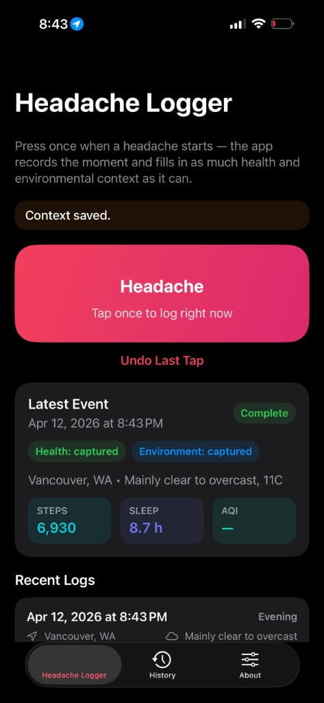
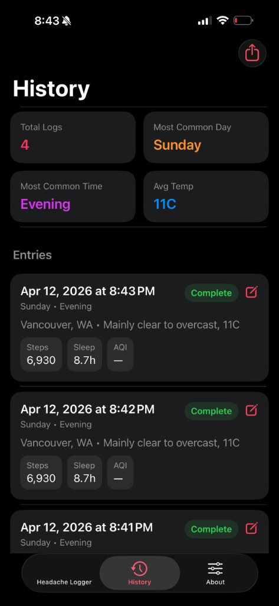
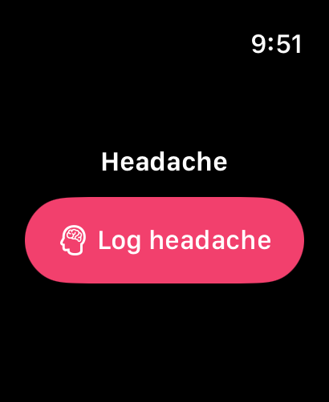

The headache tracker app for iPhone and Apple Watch. Press once when a headache or migraine starts, and it fills in Health, weather, and environmental context automatically.
iPhone · Apple Watch · Widgets
Download on the App Store


Health, weather, and time, recorded the moment you log.
Steps, sleep, heart rate, HRV, SpO₂, VO₂ max, audio exposure, mindful minutes, and recent workouts, captured automatically.
Temperature, barometric pressure, humidity, air quality, UV index, and pollen levels at the moment you log.
Weekday, hour, part of day, time since last sleep, and timezone, to help spot recurring triggers.
Share your full history with 80+ columns of context via email, AirDrop, or any share destination.
Optionally mark severity (slight, medium, extreme) and add personal notes. Turn the prompt on in Settings or during onboarding.
One-tap logging on Apple Watch with Health and weather context. Events queue and sync to your iPhone.
A small widget for instant logging. The app enriches the entry with full context when you next open it.
Migraine Headache Tracker Log stores everything on your device. No accounts, no analytics, no ads, no cloud sync. Location is used only to fetch local weather from Open-Meteo, and raw coordinates are never stored. Your data is only shared when you explicitly export it.
Privacy Policy →How it's built.
When you have a headache, you don't want to fill out a form. You want to press one button and move on. But later, when you're trying to find patterns, you wish you had more context.
Migraine Headache Tracker Log solves both: one tap to log, rich context attached automatically. Your future self gets a spreadsheet with everything that might have triggered it.
Yes. Migraine Headache Tracker Log records a headache with one tap on iPhone, Apple Watch, or a Home Screen widget, then fills in Apple Health, weather, and air quality context automatically.
Tap once when a headache starts and the app timestamps it. It then attaches Apple Health data such as sleep, heart rate, and HRV, plus local weather like barometric pressure, and you can optionally add a severity and notes.
Yes. The Apple Watch app has a one-tap log button with Health and weather context. Entries sync to your paired iPhone.
Yes. It records barometric pressure with temperature, humidity, air quality, UV index, and pollen levels at the moment you log, so you can compare them with your own history. The optional Headache Pro upgrade can alert you when the forecast matches a pattern in your own entries.
Yes. You can export your full history as a CSV with 80+ columns of context by email, AirDrop, or any share destination. The app is a log only and is not a medical device, so it does not diagnose, treat, or prevent any condition.
The core app is free to download, has no ads, and needs no account. Headache Pro is an optional upgrade for pattern insights and alerts, with prices shown in the app before you buy and varying by region.
Yes. Everything is stored on your device, with no accounts, no analytics, and no cloud sync. Location is used only to fetch local weather from Open-Meteo, raw coordinates are never stored, and your data is shared only when you export it.
| Platform | iOS 17+, watchOS 10+ |
| Storage | SwiftData on-device (App Group); no accounts or cloud sync |
| Health Data | Sleep, HRV, activity, mindful minutes, heart rate, etc. |
| Weather | Open-Meteo API (pressure, temp, humidity, pollen) |
| Air Quality | Open-Meteo air quality API at time of entry |
| Pro | Optional yearly, monthly, or lifetime IAP for patterns, alerts, and imports |
| Export | 80+ column CSV with all signals joined by timestamp |
One-tap logging. The default flow: open app, tap severity, done. Optional notes if you want. The app captures the timestamp and starts fetching context immediately in the background. No loading spinner blocking the UI.
Context without clutter. Every headache entry stores 80+ columns you didn't have to type: weather pressure changes, air quality index, sleep duration from last night, HRV trend from the past week.
CSV export for doctors. The export is a raw CSV with every column labeled, so doctors and researchers can import it directly.
Watch app for discrete logging. In a meeting when a headache starts? Log it from your wrist. No phone pull-out, no obvious app usage. The complication shows today's count at a glance.
Free on the App Store. No account required.
Download on the App Store